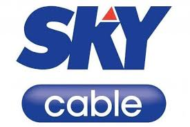
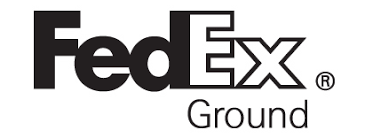
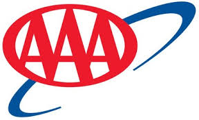
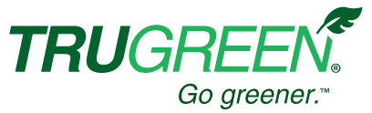
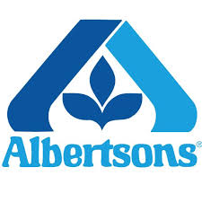
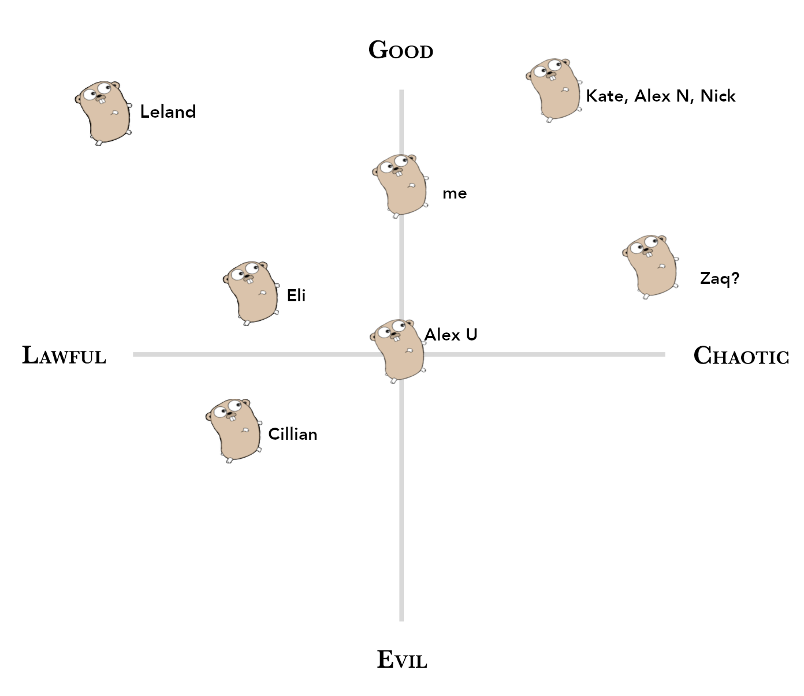
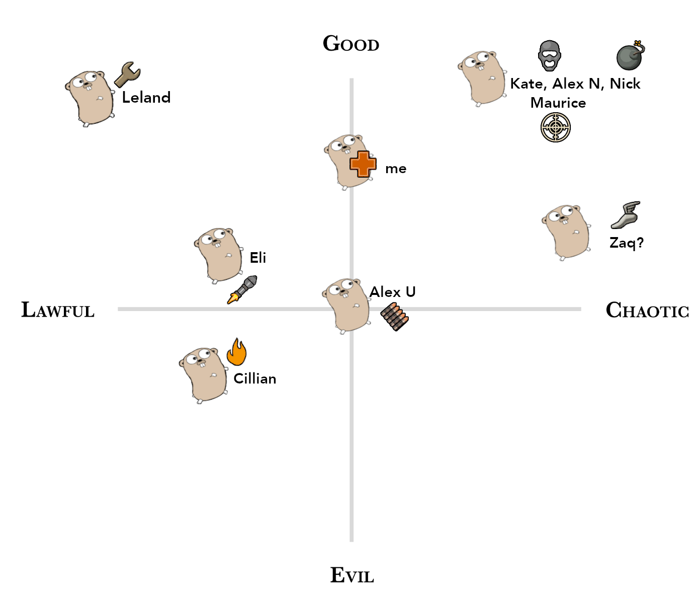
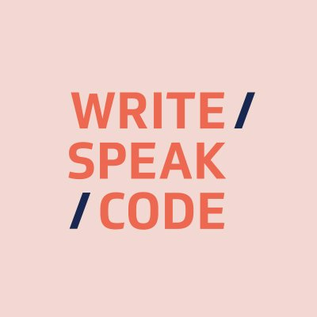
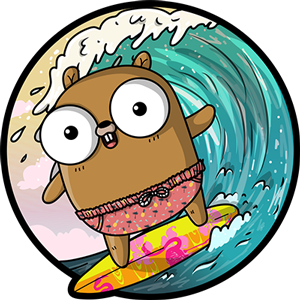

What is Glympse?





So, who are you people?

Alignment and Roles

Why Go for us?
Small footprint
Collaborative codebase
Maximum readability and minimal overhead...
...with just the right amount of control under the covers
Reasons to visit us again

Thursday May 2

Keep in touch with us!

@teamglympse
 @glympse
Glympse
@glympse
Glympse